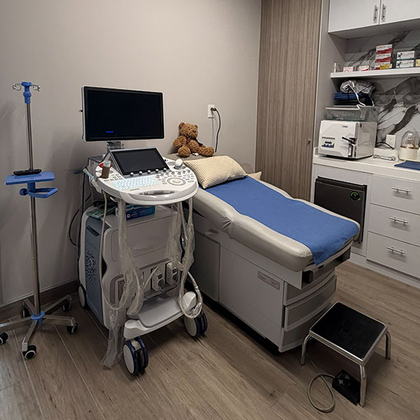

Consulta de Medicina Materno-Fetal
Valoración especializada de la salud materna y fetal para acompañarte durante el embarazo, resolver tus dudas y diseñar un plan de atención individualizado, incluyendo el seguimiento de embarazos de alto riesgo.
Ver más sobre este servicio →Para quién y cuándo acudir
Para quién. Mujeres embarazadas que requieren una valoración especializada de la salud de su bebé y de los factores que pueden influir en el embarazo, especialmente cuando existen antecedentes médicos, factores de riesgo o hallazgos que necesitan una evaluación más detallada.
Cuándo acudir. En cualquier etapa del embarazo, idealmente desde el primer trimestre si existen factores de riesgo o se desea una valoración especializada. También cuando otro profesional de salud recomienda una evaluación materno-fetal.